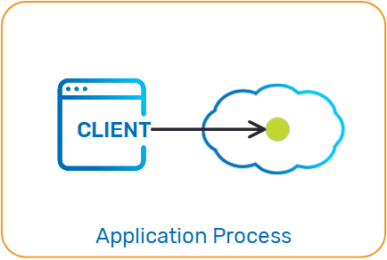
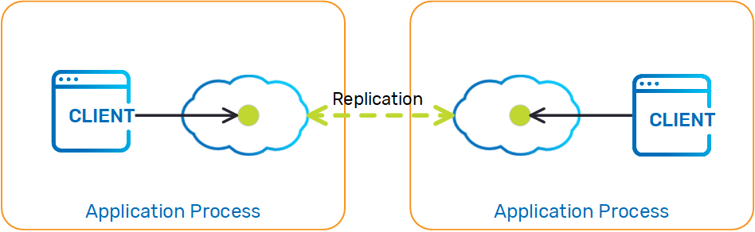
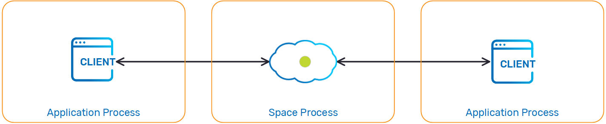

A Space is a logical in-memory service, which can store entries of information. An entry is a domain object. In Java, an entry can be a simple POJO, or a SpaceDocument.
When a client connects to a Space, a proxy is created that holds a connection, which implements the space API. All client interaction is performed through this proxy.
The Space is accessed via a programmatic interface that supports the following main functions:
For more information about Spaces, see the Operations page.
A client communicating with a an embedded Space performs all its operations via local connection. There is no network overhead when using this approach.

The following is an example of how to create an embedded Space. The EmbeddedSpaceConfigurer is used to configure the Space URL:
GigaSpace gigaSpace = new GigaSpaceConfigurer(new EmbeddedSpaceConfigurer("mySpace")).gigaSpace();
<os-core:embedded-space id="space" space-name="mySpace"/>
<os-core:giga-space id="gigaSpace" space="space"/>
<bean id="space" class="org.openspaces.core.space.EmbeddedSpaceFactoryBean">
<property name="name" value="space" />
</bean>
<bean id="gigaSpace" class="org.openspaces.core.GigaSpaceFactoryBean">
<property name="space" ref="space" />
</bean>
Instead of defining everything inside the PU,xml, it is also possible to configure the PU via code and then it is only required to specify the class that implements the configuration. You can find an example in the built-in blueprint (stateful) by selecting option 2 from the blueprint generation as shown on this
The Embedded space can be used in a distributed architecture such as the replicated or partitioned clustered space:

A simple way to use the embedded Space in a clustered architecture is by deploying a clustered Space, or packaging your application as a Processing Unit and deploying it using the relevant SLA.
A client communicating with a remote Space performs all its operations via a remote connection. The remote Space can be partitioned (with or without backups) or replicated (based on synchronous or asynchronous replication).

The following is an example of how a client application can create a proxy for interacting with a remote Space:
GigaSpace gigaSpace = new GigaSpaceConfigurer(new SpaceProxyConfigurer("mySpace")).gigaSpace();
<os-core:space-proxy id="space" space-name="mySpace"/>
<os-core:giga-space id="gigaSpace" space="space"/>
<bean id="space" class="org.openspaces.core.space.SpaceProxyFactoryBean">
<property name="name" value="space" />
</bean>
<bean id="gigaSpace" class="org.openspaces.core.GigaSpaceFactoryBean">
<property name="space" ref="space" />
</bean>
Instead of defining everything inside the PU.xml, it is also possible to configure the PU via code and then it is only required to specify the class that implements the configuration. You can find an example in the built-in blueprint for remote proxy (stateless) by selecting option 4 from the blueprint generation as shown on this
For more information about the Space URL Properties, see The Space URL.
When working with a remote Space, the Space may become unavailable (due to network problems, Processing Unit relocation, etc.). For information on how such disruptions are handled and configured, refer to Proxy Connectivity.
read operations implicitly. The local cache is loaded on demand or when you perform a read operation, and is updated implicitly by the Space.
The following is an example of a GigaSpace construct with a local cache:
// Initialize remote space configurer:
SpaceProxyConfigurer urlConfigurer = new SpaceProxyConfigurer("space");
// Initialize local cache configurer
LocalCacheSpaceConfigurer localCacheConfigurer = new LocalCacheSpaceConfigurer(urlConfigurer);
// Create local cache:
GigaSpace localCache = new GigaSpaceConfigurer(localCacheConfigurer).gigaSpace();
<os-core:space-proxy id="space" space-name="mySpace"/>
<os-core:local-cache id="localCacheSpace" space="space"/>
<os-core:giga-space id="localCache" space="localCacheSpace"/>
<bean id="space" class="org.openspaces.core.space.SpaceProxyFactoryBean">
<property name="name" value="space" />
</bean>
<bean id="localCacheSpace"
class="org.openspaces.core.space.cache.LocalCacheSpaceFactoryBean">
<property name="space" ref="space" />
</bean>
read or readMultiple operations implicitly. The local view is loaded on start, and is updated implicitly by the Space.

Here is an example for a GigaSpace construct with a local cache:
// Initialize remote space configurer:
SpaceProxyConfigurer configurer = new SpaceProxyConfigurer("space");
// Initialize local view configurer
LocalViewSpaceConfigurer localViewConfigurer = new LocalViewSpaceConfigurer(configurer)
.addViewQuery(new SQLQuery<Message>(Message.class, "processed = true"))
.addViewQuery(new SQLQuery<Message>(Message.class, "priority > 3"));
// Create local view:
GigaSpace localView = new GigaSpaceConfigurer(localViewConfigurer).gigaSpace();
<os-core:space-proxy id="space" space-name="mySpace" />
<os-core:local-view id="localViewSpace" space="space">
<os-core:view-query class="Message" where="processed = true"/>
<os-core:view-query class="Message" where="priority > 3"/>
</os-core:local-view>
<os-core:giga-space id="localView" space="localViewSpace"/>
<bean id="space" class="org.openspaces.core.space.SpaceProxyFactoryBean">
<property name="name" value="space" />
</bean>
<bean id="viewSpace" class="org.openspaces.core.space.cache.LocalViewSpaceFactoryBean">
<property name="space" ref="space" />
<property name="localViews">
<list>
<bean class="com.j_spaces.core.client.view.View">
<constructor-arg index="0" value="com.example.Message1" />
<constructor-arg index="1" value="processed = true" />
</bean>
<bean class="com.j_spaces.core.client.view.View">
<constructor-arg index="0" value="com.example.Message2" />
<constructor-arg index="1" value="priority > 3" />
</bean>
</list>
</property>
</bean>
There are two types of resources associated with Space instances and Space clients that have to be released before shutting down your application.
If your Space client or embedded Space are running within a Spring-enabled environment (such as the SpaceConfigurer close() method when your application no longer uses the Space instance/Space client.
Example:
SpaceProxyConfigurer spaceProxyConfigurer = new SpaceProxyConfigurer("space");
//....
spaceProxyConfigurer.close();
// Local cache
LocalCacheSpaceConfigurer localCacheConfigurer = new LocalCacheSpaceConfigurer(urlConfigurer);
localCacheConfigurer.close();
// Local view
LocalViewSpaceConfigurer localViewConfigurer = new LocalViewSpaceConfigurer(urlConfigurer);
localViewConfigurer.close();
When using LocalCache and LocalView. you need to call the close() method on their respective configurer.
All communication-related resources in
If your application runs in a standalone environment or another hosted environment (such as a JEE application server), you must explicitly clean up those resources. You have to shut down these resources explicitly when your application no longer uses the
If the JVM process is shut down anyway, you don't have to explicitly shut down the communication resources.
Example:
SpaceProxyConfigurer spaceProxyConfigurer = new SpaceProxyConfigurer("space");
//....
spaeProxyConfigurer.close();
LRMIManager.shutdown();
A secured Space should be configured with a security context so that it can be accessed (when connecting to it remotely). The following is an example of how this can be configured:
<os-core:space-proxy id="space" space-name="mySpace">
<os-core:security username="sa" password="adaw@##$" />
</os-core:space-proxy>
<bean id="space" class="org.openspaces.core.space.SpaceProxyFactoryBean">
<property name="name" value="space" />
<property name="securityConfig">
<bean class="org.openspaces.core.space.SecurityConfig">
<property name="username" value="sa" />
<property name="password" value="adaw@##$" />
</bean>
</property>
</bean>
The following is an example of how to define security with an embedded Space. In this case, we enable security and specify the username and password.
<os-core:space-proxy id="space" space-name="mySpace">
<os-core:security username="sa" password="adaw@##$" />
</os-core:space-proxy>
<bean id="space" class="org.openspaces.core.space.EmbeddedSpaceFactoryBean">
<property name="name" value="space" />
<property name="securityConfig">
<bean class="org.openspaces.core.space.SecurityConfig">
<property name="username" value="sa" />
<property name="password" value="adaw@##$" />
</bean>
</property>
</bean>
You can configure the Space to be secured using deploy-time properties (bean-level properties), without declaring the security element. The security.username and security.password can be provided, and the Spaces defined within the Processing Unit are automatically secured.
For more information about how to secure
When constructing a Space, you can provide Space Persistency extensions using Spring-based configuration instead of using the Space schema. The following is an example of how it can be defined:
<bean id="dataSource" class="org.apache.commons.dbcp.BasicDataSource" destroy-method="close">
<property name="driverClassName" value="org.hsqldb.jdbcDriver"/>
<property name="url" value="jdbc:hsqldb:hsql://localhost:9001"/>
<property name="username" value="sa"/>
<property name="password" value=""/>
</bean>
<bean id="sessionFactory" class="org.springframework.orm.hibernate<bean id="dataSource" class="org.apache.commons.dbcp.BasicDataSource" destroy-method="close">
<property name="driverClassName" value="org.hsqldb.jdbcDriver"/>
<property name="url" value="jdbc:hsqldb:hsql://localhost:9001"/>
<property name="username" value="sa"/>
<property name="password" value=""/>
</bean>
<bean id="sessionFactory" class="org.springframework.orm.hibernateThe above example uses Spring built-in support for configuring both a custom JDBC DataSource and a Hibernate SessionFactory to define and use the HibernateSpaceDataSource. The
This configuration can also be used with the
|
|
|